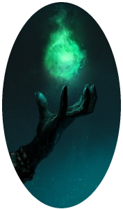

Co czeka mnie na tej stronie?
Strona poświęcona jest gatunkowi literackiemu fantasy. W miarę młodemu i niezwykle bogatemu gatunkowi. Mam zamiar przedstawić czym się charakteryzuje, jakie są jego rodzaje oraz jaki wpływ miał na pozostałe teksty kultury.„Fantazjowanie jest naturalną czynnością człowieka. Rozumowi ani nie zagraża, ani nie obraża go bynajmniej, ani nie przytępia apetytu nań, pod żadnym pozorem nie zakłóca też percepcji racjonalizmu naukowego. Przeciwnie, im rozum bardziej przenikliwy i otwarty, tym bogatsze fantazje zdolen wytwarzać." – Tolkien.
Czym jest fantasy?
 Fantasy to gatunek literacki lub filmowy korzystający i posiłkujący się na mitologiach różnych ludów w historii oraz idei magii. W ogromnej większości oparty jest również o wierzenia średniowieczne. Istota fantastyki polega na kreowaniu postaci, części świata lub całej rzeczywistości zupełnie odmiennej od tej, którą znamy z życia. Fantasy w znacznym stopniu "przenika" się z science fiction i horrorem. Często odróżnienie ich bywa trudne. W szerszym znaczeniu, fantasy obejmuje prace wielu pisarzy, artystów, filmowców, muzyków, począwszy od starożytnych mitów i legend, aż po wiele ostatnich tytułów, znanych obecnie szerokiej publiczności.Historia
Za prekursora nowoczesnej fantasy uznaje się George MacDonalda. MacDonald miał duży wpływ zarówno na J. R. R. Tolkiena, jak i na C. S. Lewisa. Innym istotnym autorem w tym gatunku był William Morris, znany angielski poeta, który napisał kilka powieści u schyłku stulecia, między innymi The Well at the World's End (1896). Według historyków gatunku to Morris jako pierwszy wpadł na pomysł stworzenia odrębnego świata przedstawionego jako miejsca akcji. Literatura fantasy nie była jednak szeroko znana, ani ceniona aż do końca stulecia. Dopiero Edward Plunkett, znany jako Lord Dunsany, sprawił, że gatunek stał się popularny. Powieści z lat 1905-1919 usytuowane w fantastycznym świecie zwanym Pegana miały na to duży wpływ. Co ciekawe fantastyka w literaturze dla dzieci była akceptowana łatwiej niż fantastyka przeznaczona dla dorosłych, dlatego pisarze chcący tworzyć fantastykę często decydowali się ubrać swoje dzieło w postać książki dla dzieci.W latach czterdziestych i pięćdziesiątych XX w. szeroką popularność zdobył gatunek sword and sorcery, zapoczątkowany przez Roberta E. Howarda serią opowieści o Conanie Barbarzyńcy. Było to przed nadejściem high fantasy i przed nadejściem największej popularności prac Tolkiena: Hobbit (pierwsze wydanie w 1937) i Władca Pierścieni (1954). Popularność w późnych latach 60. pozwoliła fantasy w pełni wkroczyć do głównego nurtu kulturowego.